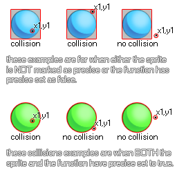

collision_point( x, y, obj, prec, notme );
| Streit | Beschreibung |
|---|---|
| x | Die X-Koordinate des zu überprüfenden Punktes. |
| y | Die y-Koordinate des zu überprüfenden Punktes. |
| obj | Das Objekt, das auf Kollisionen geprüft werden soll. |
| prec | Ob die Überprüfung auf pixel-perfekten Kollisionen (true = langsam) oder auf seiner Begrenzungsbox im Allgemeinen basiert (false = fast). |
| notme | Ob die aufrufende Instanz gegebenenfalls ausgeschlossen werden soll (true) oder nicht (false). |
Rückgabe : Instanz-ID oder nicht
Der Kollisionspunkt prüft den durch die Argumente x1, y1 spezifizierten Punkt auf eine Kollision mit einer beliebigen Instanz des Objekts, das durch das Argument "obj" angegeben wird. Diese Prüfung kann entweder präzise oder nicht, aber für eine genaue Kollisionen aktiviert sein werden, das Objekt oder die Instanz, die Sie für die Überprüfung müssen auch präzise Kollisionen für ihre Sprite aktiviert. Wenn nicht, basiert die Standardüberprüfung auf Begrenzungsrahmen. Das folgende Bild zeigt, wie dies funktioniert:

Denken Sie daran, dass für präzise Kollisionen sowohl das Objekt-Sprite als auch die Kollisionsfunktion genau markiert sein müssen. Es sollte auch beachtet werden, dass der Rückgabewert der Funktion die ID einer der Instanzen sein kann, die als kollidiert betrachtet werden. Wenn sich also drei Instanzen an diesem Punkt überlappen, könnte jeder ihrer IDs der Rückgabewert der Funktion sein.
if collision_point(x, y, obj_Cursor, false,
true)
{
Score += 10S;
}
Hier prüfen wir den Punkt an der Position des Objekts, das den Code für das Objekt "obj_Cursor" hat. Wenn es eins gibt, dann addieren wir 10 auf die Bewertungsvariable.